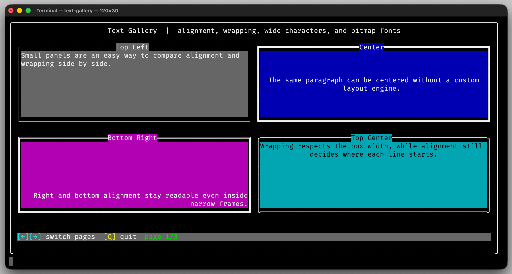

Geometry
The geometry classes provide the building blocks for positioning and layout inside a terminal buffer. They describe sizes, positions, rectangles, and directions, and allow you to derive new regions from existing ones.
Using explicit geometry types keeps layout code readable and makes it easy to construct structured terminal interfaces.
Usage
Building a Layout from Rectangles
The geometry types are designed to make screen layout explicit and easy to understand. Instead of calculating coordinates manually, you derive smaller regions from a larger canvas.
const auto canvas = Rectangle{0, 0, 80, 24};
const auto header = canvas.subRectangle(Anchor::TopCenter, Size{0, 3}, Margins{1, 2, 0, 2});
const auto content = canvas.insetBy(Margins{4, 2, 2, 2});
buffer.drawText("Header", header, Alignment::Center, Color{fg::BrightWhite, bg::Blue});
buffer.drawText("Main content", content, Alignment::TopLeft, Color{fg::BrightWhite, bg::Black});
In this example, the screen is divided into a header area and a content region derived from the main canvas.
Working with Positions and Directions
Position, Size, and Direction are useful when implementing
custom cursor movement, grid logic, or simple simulations.
auto cursor = Position{10, 5};
cursor += Direction::fromString("east").toDelta();
if (Size{80, 24}.contains(cursor)) {
buffer.set(cursor, Char{"@", Color{fg::BrightYellow, bg::Black}});
}
Here a cursor moves one step to the east. The resulting position is then checked against the available screen size before rendering a character.
Splitting a Rectangle into Grid Cells
Rectangle::gridCells() divides a larger canvas into evenly spaced
sub-rectangles. This is useful for dashboards, menu grids, and
multi-panel layouts where each cell should keep a predictable size.
const auto canvas = Rectangle{0, 0, 80, 24};
const auto cells = canvas.gridCells(2, 3, 2, 1);
for (const auto &cell : cells) {
buffer.drawFrame(cell, FrameStyle::Light, Color{fg::BrightCyan, bg::Black});
}
buffer.drawText("Overview", cells[0].insetBy(Margins{1}), Alignment::TopLeft);
buffer.drawText("Status", cells[1].insetBy(Margins{1}), Alignment::TopLeft);
buffer.drawText("Log", cells[2].insetBy(Margins{1}), Alignment::TopLeft);
If the requested number of rows, columns, and spacing no longer fits
into the rectangle, gridCells() throws std::invalid_argument.
{kind=link}

The text-gallery demo uses rectangles and alignment to place
multiple panels on one screen.
Interface
-
enum class erbsland::cterm::Alignment : uint8_t
Alignment of text or graphics in a box.
Values:
-
enumerator Left
Aligned to the left edge of the box.
-
enumerator HCenter
Aligned to the horizontal center of the box.
-
enumerator Right
Aligned to the right edge of the box.
-
enumerator Top
Aligned to the top edge of the box.
-
enumerator VCenter
Aligned to the vertical center of the box.
-
enumerator Bottom
Aligned to the bottom edge of the box.
-
enumerator TopLeft
Aligned to the top-left corner of the box.
-
enumerator TopCenter
Aligned to the top-center of the box.
-
enumerator TopRight
Aligned to the top-right corner of the box.
-
enumerator CenterLeft
Aligned to the center-left of the box.
-
enumerator Center
Aligned to the center of the box.
-
enumerator CenterRight
Aligned to the center-right of the box.
-
enumerator BottomLeft
Aligned to the bottom-left corner of the box.
-
enumerator BottomCenter
Aligned to the bottom-center of the box.
-
enumerator BottomRight
Aligned to the bottom-right corner of the box.
-
enumerator HorizontalMask
Mask for extracting the horizontal component.
-
enumerator VerticalMask
Mask for extracting the vertical component.
-
enumerator Left
-
enum class erbsland::cterm::Anchor : uint8_t
Anchor describes a location inside a rectangular area using a combination of a vertical and a horizontal component.
Vertical components occupy the lower two bits (VMask).
Horizontal components occupy the next two bits (HMask). Common composite anchors (e.g. TopLeft, Center) are provided for convenience.
Values:
-
enumerator Top
Top aligned vertically.
-
enumerator VCenter
Vertically centered.
-
enumerator Bottom
Bottom aligned vertically.
-
enumerator Left
Left aligned horizontally.
-
enumerator HCenter
Horizontally centered.
-
enumerator Right
Right aligned horizontally.
-
enumerator TopLeft
-
enumerator TopCenter
-
enumerator TopRight
-
enumerator CenterLeft
-
enumerator Center
-
enumerator CenterRight
-
enumerator BottomLeft
-
enumerator BottomCenter
-
enumerator BottomRight
-
enumerator VMask
Mask for extracting the vertical component.
-
enumerator HMask
Mask for extracting the horizontal component.
-
class Direction
A direction in a 2D grid.
Public Types
-
enum Enum
The enum for the direction.
Values:
-
enumerator None
No direction.
-
enumerator North
North.
-
enumerator NorthEast
North-east.
-
enumerator East
East.
-
enumerator SouthEast
South-east.
-
enumerator South
South.
-
enumerator SouthWest
South-west.
-
enumerator West
West.
-
enumerator NorthWest
North-west.
-
enumerator None
Public Functions
-
constexpr Direction() noexcept = default
Create a direction with value
None.
-
~Direction() = default
Default destructor.
-
Position toDelta() const noexcept
Convert this direction into a position delta.
- Returns:
The unit delta for this direction, or
(0,0)forNone.
-
std::string_view toString() const noexcept
Convert this direction into a canonical lowercase string.
- Returns:
The normalized direction name.
Public Static Functions
-
enum Enum
-
class Margins
Represents margins (top, right, bottom, left) around a rectangle.
Immutable-like value type for representing padding or insets.
Provides convenience constructors for uniform or symmetric margins.
Public Functions
-
Margins() = default
Default construct with uninitialized values (useful for aggregate-style construction).
-
inline explicit constexpr Margins(const int allSides)
Construct margins with the same value on all sides.
- Parameters:
allSides – Value applied to top, right, bottom and left.
-
inline constexpr Margins(const int horizontal, const int vertical)
Construct margins with separate horizontal and vertical values.
- Parameters:
horizontal – Value applied to left and right.
vertical – Value applied to top and bottom.
-
inline constexpr Margins(const int top, const int right, const int bottom, const int left)
Construct margins with individually specified sides.
- Parameters:
top – Top margin.
right – Right margin.
bottom – Bottom margin.
left – Left margin.
-
bool operator==(const Margins &other) const noexcept = default
Equality comparison (all sides must be equal).
-
inline Margins operator-() const noexcept
Unary negation producing margins with all sides negated.
Useful for reversing an inset/expansion operation.
-
inline constexpr int top() const noexcept
Get top margin.
-
inline constexpr int right() const noexcept
Get right margin.
-
inline constexpr int bottom() const noexcept
Get bottom margin.
-
inline constexpr int left() const noexcept
Get left margin.
-
class Position
Represents a 2D integer position or vector (x, y).
Lightweight value type with default construction to (0,0).
Useful both for coordinates in a grid and for 2D vector arithmetic.
Public Functions
-
Position() = default
Default construct to (0,0).
-
inline constexpr Position(int x, int y) noexcept
Construct from explicit coordinates.
- Parameters:
x – The x-coordinate.
y – The y-coordinate.
-
bool operator==(const Position &other) const noexcept = default
Equality comparison (component-wise).
-
bool operator!=(const Position &other) const noexcept = default
Inequality comparison (component-wise).
-
Position operator+(const Position &other) const noexcept
Vector addition (component-wise).
- Parameters:
other – The other position to add.
- Returns:
A Position with coordinates (_x + other._x, _y + other._y).
-
Position operator-(const Position &other) const noexcept
Vector subtraction (component-wise).
- Parameters:
other – The other position to subtract.
- Returns:
A Position with coordinates (_x - other._x, _y - other._y).
-
Position &operator+=(const Position &other) noexcept
Add another position to this one in-place.
- Parameters:
other – The other position to add.
- Returns:
Reference to this position.
-
Position &operator-=(const Position &other) noexcept
Subtract another position from this one in-place.
- Parameters:
other – The other position to subtract.
- Returns:
Reference to this position.
-
inline constexpr int x() const noexcept
Get the x coordinate.
-
inline constexpr int y() const noexcept
Get the y coordinate.
-
void setX(int x) noexcept
Set the x coordinate.
- Parameters:
x – New x value.
-
void setY(int y) noexcept
Set the y coordinate.
- Parameters:
y – New y value.
-
int distanceTo(Position other) const noexcept
Manhattan (L1) distance to another position.
- Parameters:
other – The other position.
- Returns:
|x - other.x| + |y - other.y|.
-
Position componentMax(Position other) const noexcept
Component-wise maximum with another position.
- Parameters:
other – The other position.
- Returns:
A Position containing the max of each component.
-
class Rectangle
Axis-aligned rectangle represented by a top-left position and size.
Provides geometry utilities such as containment tests, expansion and iteration.
- Tested:
RectangleTest
Public Functions
-
Rectangle() = default
Construct an empty rectangle at (0,0).
-
inline constexpr Rectangle(int x, int y, int width, int height) noexcept
Construct from explicit position and size values.
-
inline constexpr Rectangle(Position pos, Size size) noexcept
Construct from position and size objects.
- Parameters:
pos – Top-left corner position.
size – Rectangle size.
-
Rectangle &operator|=(const Rectangle &other) noexcept
Expand this rectangle to include another rectangle.
- Parameters:
other – Other rectangle to merge.
- Returns:
Reference to this rectangle.
-
inline int x1() const noexcept
Left x-coordinate.
-
inline int y1() const noexcept
Top y-coordinate.
-
inline int x2() const noexcept
Right x-coordinate (exclusive).
-
inline int y2() const noexcept
Bottom y-coordinate (exclusive).
-
Position anchor(Anchor anchor = Anchor::TopLeft) const noexcept
Position of a given anchor within this rectangle.
- Parameters:
anchor – Anchor to query.
- Returns:
The position inside this rectangle matching the requested anchor.
-
inline void setPos(Position pos) noexcept
Set the top-left corner position.
- Parameters:
pos – New position value.
-
inline void setSize(Size size) noexcept
Set the size of the rectangle.
- Parameters:
size – New size value.
-
Rectangle expandedBy(Margins margins) const noexcept
Create a rectangle expanded by the provided margins.
- Parameters:
margins – Margins to apply; positive values expand outward.
- Returns:
The expanded rectangle.
-
Rectangle insetBy(Margins margins) const noexcept
Create a rectangle inset by the provided margins.
- Parameters:
margins – Margins to remove from each side.
- Returns:
The inset rectangle.
-
Rectangle subRectangle(Anchor anchor, Size size, Margins margins) const noexcept
Create a sub-rectangle inside this rectangle.
- Parameters:
anchor – The anchor of the rectangle.
size – The size. Zero means full width/height.
margins – The margins around the sub rectangle.
- Returns:
The aligned sub-rectangle.
-
bool contains(Position testedPosition) const noexcept
Check if a position is inside the rectangle.
- Parameters:
testedPosition – Position to test.
- Returns:
trueif the position lies inside the rectangle bounds.
-
bool isFrame(Position testedPosition) const noexcept
Check if a position lies on the rectangle frame.
- Parameters:
testedPosition – Position to test.
- Returns:
trueif the position lies on the outer frame of the rectangle.
-
int64_t frameIndex(Position testedPosition) const noexcept
Get the clockwise border index for a frame position.
The top-left corner has index
0, then the index increases clockwise around the perimeter. Degenerate rectangles with width or height1still produce a continuous index sequence.- Parameters:
testedPosition – The position on the frame.
- Returns:
The clockwise border index, or
-1if the position is not on the frame.
-
std::vector<Rectangle> gridCells(int rows, int columns, int horizontalSpacing = 0, int verticalSpacing = 0) const
Divide this rectangle into equally spaced grid cells.
Each cell must be at least 1x1 in size, if this isn’t possible,
std::invalid_argumentis thrown.- Parameters:
rows – The number of rows. Minimum 1.
columns – The number of columns. Minimum 1
horizontalSpacing – The spacing between cells horizontally.
verticalSpacing – The spacing between cells vertically.
- Throws:
std::invalid_argument – if rows or columns are less than 1 or the chosen division is impossible.
- Returns:
A vector of rectangles representing the grid cells from left to right, top to bottom.
-
class Size
A non-negative 2D size (width × height).
Width and height are clamped to be >= 0.
Many operations assume a grid indexed from (0,0) to (width-1,height-1).
Public Functions
-
Size() = default
Construct a zero size (0 × 0).
-
inline constexpr Size(int width, int height) noexcept
Construct a size from explicit width and height.
Negative inputs are clamped to 0.
- Parameters:
width – The desired width (clamped to >= 0).
height – The desired height (clamped to >= 0).
-
inline constexpr Size(Position pos1, Position pos2) noexcept
Construct a size from the axis-aligned distance between two positions.
Note
The order of the positions does not matter; absolute differences are used.
- Parameters:
pos1 – First position.
pos2 – Second position.
-
bool operator==(const Size &other) const noexcept = default
Equality comparison on width and height.
-
bool operator!=(const Size &other) const noexcept = default
Inequality comparison on width and height.
-
inline Size operator+(const Size &other) const noexcept
Add two sizes.
- Parameters:
other – The size to add.
- Returns:
The component-wise sum.
-
inline Size operator-(const Size &other) const noexcept
Subtract two sizes.
- Parameters:
other – The size to subtract.
- Returns:
The component-wise difference, clamped to non-negative values by the constructor.
-
inline constexpr int width() const noexcept
Get the width (>= 0).
-
inline void setWidth(int width) noexcept
Set the width.
Negative values are clamped to 0.
- Parameters:
width – New width (clamped to >= 0).
-
inline constexpr int height() const noexcept
Get the height (>= 0).
-
inline void setHeight(int height) noexcept
Set the height.
Negative values are clamped to 0.
- Parameters:
height – New height (clamped to >= 0).
-
inline bool fitsInto(const Size other) const noexcept
Check if this size fits completely into another size (component-wise <=).
- Parameters:
other – The candidate container size.
- Returns:
true if width <= other.width and height <= other.height.
-
inline int area() const noexcept
Compute the area (width * height).
- Returns:
The area. Note: returns 0 if either dimension is 0.
-
inline Position anchor(const Anchor anchor) const noexcept
Compute a position inside the rectangle defined by this size for a given anchor.
Bottom-right resolves to (width-1, height-1), top-left to (0,0), etc.
- Parameters:
anchor – The anchor describing the target corner/edge/center.
- Returns:
The position inside the [0,width-1]×[0,height-1] grid (or (0,0) for empty dimensions).
-
inline bool isInRange(const Size minimum, const Size maximum) const noexcept
Test if the width and height of this size is in the given range.
- Parameters:
minimum – The minimum size.
maximum – The maximum size.
- Returns:
true If this size is in the range
minimum-maximum.
-
inline Size componentMax(Size other) const noexcept
Component-wise maximum with another size.
- Parameters:
other – Other size.
- Returns:
A size whose width is max(this.width, other.width) and height is max(this.height, other.height).
-
inline Size componentMin(Size other) const noexcept
Component-wise minimum with another size.
- Parameters:
other – Other size.
- Returns:
A size whose width is min(this.width, other.width) and height is min(this.height, other.height).
-
inline constexpr bool contains(const Position &pos) const noexcept
Check if a position lies strictly inside the bounds [0,width) × [0,height).
- Parameters:
pos – The position to test.
- Returns:
true if 0 <= x < width and 0 <= y < height.